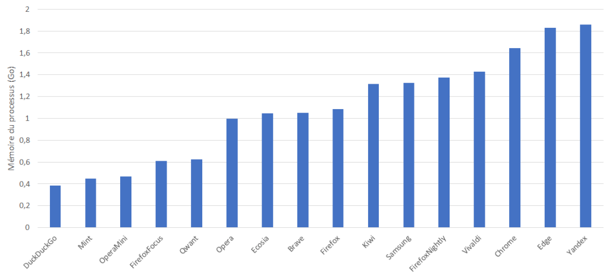

The internet browser is the most important tool on a mobile device. It is the engine for browsing the internet. No longer just for websites but also now for new types of applications based on web technologies (progressive web app, games, etc.).
For this new edition of our ranking, carried out in 2018 and 2020, we have chosen to compare 16 mobile applications: Brave, DuckDuckGo, Chrome, Ecosia, Edge, Firefox, Firefox Focus, Firefox Nightly (formerly Firefox Preview), Kiwi, Mint, Opera, Opera Mini, Qwant, Samsung, Vivaldi et Yandex.
The objective of these measures is to see how the solutions stand in terms of environmental impact (Carbon) in relation to each other on common user scenarios but also to provide benchmarks on our uses of browsers.

For each of the 16 applications measured on a Galaxy S7 (Android 8) smartphone, the scenarios integrating the launch of the browser, browsing on 7 different websites, periods of inactivity, etc. were carried out through our Greenspector Test Runner, allowing the performance of automated tests.
Learn more about our methodology
Total energy consumption (in mAh)

The average power consumption is 49mAh (as a reminder, the 2020 ranking average was 47mAh or -4.2%).
Here is the evolution from last year.
| 2021 Ranking | 2020 Ranking | Évolution | |
|---|---|---|---|
| Firefox Focus | 1 | 10 | 9 |
| Vivaldi | 2 | 4 | 2 |
| DuckDuckGo | 3 | 5 | 2 |
| Firefox Nighly | 4 | 10 | 6 |
| Yandex | 5 | 3 | -2 |
| Kiwi | 6 | 8 | 2 |
| Opéra | 7 | 2 | -5 |
| Brave | 8 | 7 | -1 |
| Ecosia | 9 | 1 | -8 |
| Chrome | 10 | 6 | -4 |
| Samsung | 11 | 9 | -2 |
| Firefox | 12 | 13 | 1 |
| Edge | 13 | 11 | -2 |
| Qwant | 14 | 13 | -1 |
| Opera Mini | 15 | 14 | -1 |
| Mint | 16 | 12 | -4 |
Firefox Focus is the best solution in terms of energy consumption in our comparison. The version evaluated in 2020 was one of the first versions and it seems that Firefox teams have been working on optimizing the power consumption of their browser since. Ecosia loses its leading position on this indicator and finds itself in the middle of the ranking. On the side of the most energy-hungry browsers, we find Mint and Opera Mini. Note that the most popular browsers: Edge, Firefox, Chrome, and Samsung, are quite poorly classified.
This total energy consumption can be evaluated and analyzed in 2 ways: the energy consumption of pure navigation and the energy consumption related to the functionality of the browser.
Energy consumption of navigation (in mAh)
Navigation is the consumption only associated with viewing the page (no consideration of launching the browser, features, etc.).

Most browsers have a fairly similar power consumption on “pure” navigation. This is mainly due to the use of visualization engines. Most browsers use the Chromium view engine.
Compared to the 2020 ranking, it seems that the Firefox engine has improved. Qwant, using this engine too.
Energy consumption of features (in mAh)
The functionalities include browser states such as idle periods, launching the browser, writing URLs in the navigation bar.

By keeping the same classification as for the total energy, we see that the non-navigation functionalities (writing of URLs, inactivity of the browser, etc.) have a significant impact on total consumption.
Autonomy (hours)

Battery life is the number of hours the user can surf before the battery is completely discharged. The ranking does not change with respect to that of energy, as autonomy is directly related to energy.
We observe that the autonomy can double from 5h to 10h between the most consuming browser (Mint) and the least consuming (Firefox Focus).
Data (Volume of data exchanged) (MB)

Some applications do not manage the cache at all for reasons of data protection and privacy, use proxies that optimize data, have a difference in the implementation of cache management. In addition, if a browser is good, the downside is that a lot more data is potentially loaded in the background. In our methodology, we see it for the New York Times site, which is larger in terms of data.
Here is an example of the measurement iterations on the Amazon site (Amazon.com) that shows the difference in data processing between different browsers.

Memory consumption(RAM) by the browser process (MB)
Memory consumption is important to take into account in a digital service because even the variation in memory consumption does not influence the energy impact, it remains very important to integrate because of the effects of overconsumption on already congested devices. in memory, or older, less powerful, this can create instabilities or applications that cannot operate simultaneously because they compete. In ecological terms, this can of course provides a premature change of device on the user side for a more powerful model to satisfy good user comfort.

The variation goes from 400MB to 1.8GB (approximately half the RAM of the Samsung Galaxy S7).
Let us observe more precisely the behavior of the memory following the sequence:
- Launch browser
- Browser inactivity
- Navigation (Average memory consumption)
- Inactivity following navigation
- System after closing browser

At the launch of browsers, we have a median memory usage of 413MB. Edge consumes a lot more with 834MB.
If we leave the browser inactive, the memory consumption of most browsers remains fairly stable. Which is pretty good and normal. On the other hand, we see that Edge and Ecosia have a strong increase in memory.
Then, with navigation, the memory consumed increases significantly. This is due to the consumption of navigation engines to analyze and store items. The management of tabs will also play a role. If the browser offloads the memory for the non-active tabs, then the consumption will be lower.
We can note that Firefox Focus, Mint, Duck Duck go, Opera Mini and Qwant overall consume little memory.
When the browser is closed, almost all browsers are no longer in memory. Firefox remains however with 1, GB as well as Chrome and Mint with around 100MB. Probably a bug but it is annoying because elements still occupy the memory and processing operations can also exist: processing operations are confirmed on Firefox and Mint with the rate of CPU consumed by the browser process which remains high.
We can also look at the memory impact of consulting Wikipedia (the basic consumption of the browser is subtracted here).

We understand the difference in memory management between browsers and the potential entropy on heavier sites.
Performance
We measured the time it took to write the URL in the address bar.

This difference in performance can be explained by several factors: network exchanges during entry (auto-completions), processing during entry, search based on known addresses, etc. In the end, for the user, the time to access the site will be longer or shorter. For example on the Wikipedia URL entry on Duck Duck Go a lot of network traffic and CPU processing (peak at 22% CPU).

Unlike the faster Edge which has lower processing in terms of CPU.

By the way, we could have an optimization of all the browsers by limiting its treatments (for example by grouping and spacing the treatments).
Environmental impact

The environmental impact is calculated according to the Greenspector emission factors taking into account the energy consumed and the wear of the battery (impact on manufacturing). The impact of the network and the data center is taken into account with the internet intensity.
This impact is reduced to the consultation of a page.
Firefox Focus by its low consumption is first. Samsung, which has average power consumption, is in second place thanks to good data management.
The most impactful browsers (Ecosia, Edge, Mint and Opera Mini) have high power consumption and poor data management..
Méthodologie GreenspectorRated browsers
Measured versions : Brave (1.18.75), Chrome (87.0.4280.101), DuckDuckGo (5.72.1), Ecosia (4.1.3), Edge (45.12.4.5121), Firefox (84.1.2), Firefox Focus (8.11.2), Firefox Nightly 201228), Kiwi (Git201216Gen426127039), Opera (61.2.3076.56749), Opera Mini (52.2.2254.54723), Qwant (3.5.0), Vivaldi (3.5.2115.80), Yandex (20.11.3.88), Mint (3.7.2), Samsung (13.0.2.9).
Scenario
For each of its applications, measured on an S7 smartphone (Android 8), the user scenarios were carried out through our Greenspector Test Runner, allowing automated tests to be carried out.
Once the application is downloaded and installed, we run our measurements on the basic and original settings of the application. No changes are made (even if some options reduce the consumption of energy or resources: data saving mode, dark theme, etc.
However, we encourage you to check the settings of your favorite application to optimize the impact. Here is the evaluated scenario:
· Features evaluation
o Browser launching
o Adding a tab
o Writing a URL in the search bar
o Removing tabs and cleaning the cache
· Navigation
o Launch of 7 sites and wait for 30 seconds to be representative of a user journey
· Brower benchmark
o The Mozilla Kraken benchmark allows you to test JavaScript performance
· Evaluation of periods of inactivity of the browser
o On launch (this allows the home page of the browser to be evaluated)
o After navigation
o After closing the browser (to identify closing problems)
For each iteration, the following tests are carried out:
o Removal of cache and tabs (without measurement)
o First measure
o the Second measure to measure behavior with cache
o Removal of cache and tabs (with measurement)
o System shutdown of the browser (and not just a closure by the user to ensure that the browser is actually closed)
The measurement average therefore takes into account navigation with and without cache.
The main metrics analyzed are display performance, power consumption, data exchange. Other metrics such as CPU consumption, memory consumption, system data, etc. are measured but will not be displayed in this report. Contact Greenspector to find out more.
In order to improve the stability of the measurements, the protocol is fully automated. We use an abstract language of Greenspector test description which allows us strong automation of this protocol. Browser settings are the default. We have not changed any settings in the browser or its search engine.
Each measurement is the average of 5 homogeneous measurements (with a low standard deviation).
Impact assessment
To assess the impacts of infrastructures (datacenter, network) in the carbon projection calculations, we relied on our emission factor base (resulting from our R&D, such as the Impact study of the playing of a Canal + video – Greenspector) with as input the actual measured data of the volume of data exchanged. As this is a very macroscopic approach, it is subject to uncertainty and could be refined to adapt to a given context, to a given tool. For the Carbon projection, we assumed a 50% projection via a Wi-Fi network and 50% via a mobile network.
To assess the impacts of the mobile in the carbon projection calculations, we measure on a real device, the energy consumption of the user scenario and in order to integrate the material impact share, we rely on the wear rate theory generated by the user scenario on the battery, the first wearing part of a smartphone. 500 full charge and discharge cycles, therefore, cause a change of smartphone in our model. This methodology and method of calculation have been validated by the consulting firm specializing in eco-design, Evea.
In a process of continuous improvement, we are vigilant in constantly improving the consistency of our measurements as well as our methodology for projecting CO2 impact data. As a result, it is difficult to compare a study published a year earlier with a recent study.